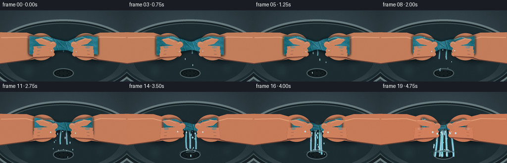
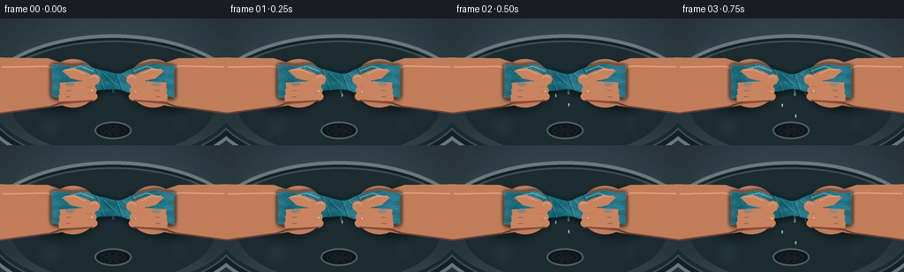

CODING AGENTS AS PIXEL WORLD MODELS
traex/GPT-5.6-Sol · phygen_012
点击播放 · 原生 RGB 像素
逐轮保存的候选
回放视频、检查图与代码变化。
每份候选均可单独播放。实际图片检查记录在下方工具轨迹中。
候选 01播放与检查图
点击播放 · 原生 RGB 像素


展开代码变化
--- 上一保存版本
+++ 本次保存版本
@@ -0,0 +1,309 @@
+from pathlib import Path
+import math
+import numpy as np
+from PIL import Image, ImageDraw, ImageFilter
+import artifact_io
+
+# Deterministic, supersampled hand-drawn physical animation.
+W,H,N,S = 256,144,20,4
+SW,SH = W*S,H*S
+rng_global = np.random.default_rng(12012)
+
+def sc(v): return int(round(v*S))
+def box(b): return tuple(sc(x) for x in b)
+def pts(p): return [(sc(x),sc(y)) for x,y in p]
+
+def layer(): return Image.new('RGBA',(SW,SH),(0,0,0,0))
+
+def ellipse(im, b, fill, outline=None, width=1):
+ ImageDraw.Draw(im).ellipse(box(b), fill=fill, outline=outline, width=sc(width) if outline else 1)
+
+def line(im, xy, fill, width, joint='curve'):
+ ImageDraw.Draw(im).line(pts(xy), fill=fill, width=max(1,sc(width)), joint=joint)
+
+def poly(im, xy, fill): ImageDraw.Draw(im).polygon(pts(xy), fill=fill)
+
+def rounded(im,b,r,fill,outline=None,width=1):
+ ImageDraw.Draw(im).rounded_rectangle(box(b),radius=sc(r),fill=fill,outline=outline,width=sc(width))
+
+def comp(base, over): return Image.alpha_composite(base,over)
+
+def base_background():
+ yy,xx=np.mgrid[0:SH,0:SW]
+ # Cool close-up utility-sink ambience, gently vignetted.
+ d=np.sqrt(((xx-SW*.50)/(SW*.72))**2+((yy-SH*.47)/(SH*.85))**2)
+ light=np.clip(1-d,0,1)
+ noise=np.random.default_rng(9).normal(0,1.6,(SH,SW))
+ arr=np.empty((SH,SW,4),np.uint8)
+ arr[...,0]=np.clip(34+30*light+noise,0,255)
+ arr[...,1]=np.clip(47+35*light+noise,0,255)
+ arr[...,2]=np.clip(52+38*light+noise,0,255)
+ arr[...,3]=255
+ im=Image.fromarray(arr,'RGBA')
+ # Sink rim and bowl establish where expressed water falls.
+ sh=layer(); d=ImageDraw.Draw(sh)
+ d.ellipse(box((-24,18,280,174)),fill=(18,29,33,225),outline=(116,135,138,210),width=sc(4))
+ d.ellipse(box((-15,25,271,165)),fill=(27,43,48,245),outline=(60,78,82,255),width=sc(2))
+ # Inner brushed-steel arcs.
+ for i in range(9):
+ inset=i*2.4
+ d.arc(box((-8+inset,31+inset*.5,264-inset,159-inset*.15)),8,174,fill=(98,119,121,34),width=sc(1))
+ # drain
+ d.ellipse(box((107,117,149,137)),fill=(12,23,27,255),outline=(90,108,110,180),width=sc(2))
+ d.ellipse(box((113,121,143,134)),fill=(21,31,34,255))
+ for a in range(0,360,45):
+ cx,cy=128+11*math.cos(math.radians(a)),127.5+4.5*math.sin(math.radians(a))
+ d.ellipse(box((cx-1.2,cy-1.2,cx+1.2,cy+1.2)),fill=(5,12,14,220))
+ im=comp(im,sh)
+ # Out-of-focus highlights on wet basin.
+ glow=layer()
+ for x,y,r,a in [(31,42,12,22),(224,51,17,18),(57,123,14,18),(202,119,11,16)]:
+ ellipse(glow,(x-r,y-r,x+r,y+r),(175,220,225,a))
+ glow=glow.filter(ImageFilter.GaussianBlur(sc(7)))
+ return comp(im,glow)
+
+BG=base_background()
+
+# Fixed emission schedule for temporally coherent drops. Rate accelerates.
+prng=np.random.default_rng(3321)
+particles=[]
+for f in range(N):
+ pressure=(f/(N-1))**1.65
+ count=1+int(5.5*pressure)
+ for j in range(count):
+ particles.append(dict(start=f, source=float(prng.normal(128,11-4*pressure)),
+ vx=float(prng.uniform(-2.0,2.0)), vy=float(prng.uniform(5.0,9.2)),
+ size=float(prng.uniform(.65,1.6))))
+
+def towel_mask_and_bounds(p, twist, squeeze):
+ # A wet terry towel: thick at the hands, narrowing sharply at the wrung center.
+ xs=np.linspace(59+squeeze*3,197-squeeze*3,150)
+ center=70.5 + 1.1*np.sin((xs-60)*.10 + twist)
+ endbulge=18.0 - 3.0*p
+ narrow=9.0 - 4.5*p
+ weight=np.exp(-((xs-128)/25.0)**2)
+ rad=endbulge*(1-weight)+narrow*weight
+ rad += 2.0*np.sin((xs-61)*.23+twist)*(0.30+0.35*p)
+ top=np.c_[xs,center-rad]
+ bot=np.c_[xs[::-1],(center+rad)[::-1]]
+ shape=np.vstack([top,bot])
+ m=Image.new('L',(SW,SH),0)
+ ImageDraw.Draw(m).polygon(pts(shape),fill=255)
+ return m,shape
+
+def draw_water(im, frame, p):
+ # Rear streams, physically falling from the cloth under gravity.
+ water=layer(); dw=ImageDraw.Draw(water)
+ jet_count=1+int(4.2*p)
+ for j in range(jet_count):
+ frac=(j+1)/(jet_count+1)
+ x0=111+34*frac + 2.0*math.sin(frame*.63+j*2.1)
+ y0=75+2*math.sin(j+frame*.2)
+ length=9+49*p + j*2
+ x1=x0+(j-(jet_count-1)/2)*2.5*p+2*math.sin(frame*.5+j)
+ y1=min(131,y0+length)
+ midx=(x0+x1)/2+2.4*math.sin(j*1.7+frame*.38)
+ ptsline=[]
+ for q in np.linspace(0,1,25):
+ x=(1-q)**2*x0+2*(1-q)*q*midx+q*q*x1
+ y=y0+(y1-y0)*q
+ ptsline.append((x,y))
+ width=0.8+1.6*p+0.25*(j%2)
+ dw.line(pts(ptsline),fill=(115,213,237,120+int(75*p)),width=sc(width+1.6))
+ dw.line(pts(ptsline),fill=(206,246,255,185+int(55*p)),width=max(1,sc(width*.45)))
+ # Falling droplets emitted at an accelerating rate.
+ for drop in particles:
+ age=frame-drop['start']
+ if age < 0: continue
+ x=drop['source']+drop['vx']*age
+ y=78+drop['vy']*age+0.90*age*age
+ if y>139: continue
+ sz=drop['size']*(1+.22*p)
+ dw.ellipse(box((x-sz*.55,y-sz*1.5,x+sz*.55,y+sz*1.5)),fill=(177,235,249,175+int(55*p)))
+ dw.ellipse(box((x-sz*.2,y-sz*1.1,x+sz*.12,y-sz*.25)),fill=(244,255,255,220))
+ # Increasing splash crown and impact rings in sink.
+ if p>.13:
+ alpha=int(70+130*p)
+ for k in range(1+int(3*p)):
+ phase=(frame*.43+k*.7)%1
+ rx=8+phase*(13+10*p)
+ ry=2+phase*3
+ dw.arc(box((128-rx,123-ry,128+rx,123+ry)),180,357,fill=(168,230,242,max(0,int(alpha*(1-phase)))),width=sc(1))
+ for k in range(int(8*p)):
+ a=-math.pi+math.pi*(k+0.5)/(max(1,int(8*p)))
+ rr=7+5*math.sin(frame*.7+k*2.3)**2
+ x=128+math.cos(a)*rr
+ y=121+math.sin(a)*rr*.45
+ dw.ellipse(box((x-.7,y-1.7,x+.7,y+.3)),fill=(205,246,255,alpha))
+ return comp(im,water)
+
+def draw_rear_hands(im,p):
+ # Hands approach one another, forearms remain planted at frame edges.
+ squeeze=8.5*p
+ skin=(194+int(8*p),126-int(5*p),91-int(4*p),255)
+ skinlight=(223,157,118,255); shade=(126,72,57,190)
+ sh=layer(); ds=ImageDraw.Draw(sh)
+ # soft cast shadows under both hands
+ ds.ellipse(box((21,50,114+squeeze,106)),fill=(0,0,0,105))
+ ds.ellipse(box((142-squeeze,50,235,106)),fill=(0,0,0,105))
+ sh=sh.filter(ImageFilter.GaussianBlur(sc(4)))
+ im=comp(im,sh)
+ a=layer(); d=ImageDraw.Draw(a)
+ # forearms and wrist/palm silhouettes
+ d.polygon(pts([(-12,44),(54,45),(84+squeeze,55),(104+squeeze,72),(96+squeeze,94),(56,101),(-12,109)]),fill=skin)
+ d.ellipse(box((54+squeeze*.2,46,111+squeeze,101)),fill=skin)
+ d.polygon(pts([(268,44),(202,45),(172-squeeze,55),(152-squeeze,72),(160-squeeze,94),(200,101),(268,109)]),fill=skin)
+ d.ellipse(box((145-squeeze,46,202-squeeze*.2,101)),fill=skin)
+ # outer wrist contour and warm edge shade
+ d.line(pts([(-3,108),(57,100),(77+squeeze,93)]),fill=shade,width=sc(2))
+ d.line(pts([(259,108),(199,100),(179-squeeze,93)]),fill=shade,width=sc(2))
+ # soft arm highlights
+ d.line(pts([(2,55),(53,54),(78+squeeze,62)]),fill=skinlight,width=sc(2))
+ d.line(pts([(254,55),(203,54),(178-squeeze,62)]),fill=skinlight,width=sc(2))
+ return comp(im,a)
+
+def draw_towel(im,p,frame):
+ squeeze=8.5*p; twist=frame*.32+2.4*p
+ mask,shape=towel_mask_and_bounds(p,twist,squeeze)
+ yy,xx=np.mgrid[0:SH,0:SW]
+ # saturated teal fabric, darker as compressed and soaked
+ wave=np.sin(xx*.035+twist)+.55*np.sin(yy*.12-xx*.018)
+ center_dark=np.exp(-((xx/S-128)/27)**2)
+ arr=np.zeros((SH,SW,4),np.uint8)
+ arr[...,0]=np.clip(32+8*wave-10*p*center_dark,0,255)
+ arr[...,1]=np.clip(111+10*wave-17*p*center_dark,0,255)
+ arr[...,2]=np.clip(128+12*wave-15*p*center_dark,0,255)
+ arr[...,3]=np.array(mask)
+ cloth=Image.fromarray(arr,'RGBA')
+ # Dimensional edge shadow.
+ edge=mask.filter(ImageFilter.GaussianBlur(sc(2.4)))
+ edgearr=np.array(edge,dtype=np.int16)-np.array(mask.filter(ImageFilter.GaussianBlur(sc(.45))),dtype=np.int16)
+ ed=Image.fromarray(np.uint8(np.clip(edgearr*2.5,0,110)),'L')
+ dark=Image.new('RGBA',(SW,SH),(5,31,38,0)); dark.putalpha(ed)
+ cloth=comp(cloth,dark)
+ tex=layer(); dt=ImageDraw.Draw(tex)
+ trng=np.random.default_rng(901) # positions fixed, deformed via centerward squeeze
+ # Terry loops / soft fibers clipped to cloth.
+ for i in range(530):
+ x=trng.uniform(61,195)
+ # squeeze fabric x coordinates toward center as pressure rises
+ x=128+(x-128)*(1-.045*p)
+ y=trng.uniform(50,91)
+ r=trng.uniform(.35,1.15)
+ col=(119,201,205,trng.integers(35,105)) if i%3 else (9,62,76,trng.integers(30,85))
+ if i%2:
+ dt.arc(box((x-r*1.8,y-r,x+r*1.8,y+r)),180,355,fill=col,width=max(1,sc(.45)))
+ else:
+ dt.line(pts([(x-r,y+r*.5),(x+r,y-r*.5)]),fill=col,width=max(1,sc(.38)))
+ tex.putalpha(Image.composite(tex.getchannel('A'),Image.new('L',(SW,SH),0),mask))
+ cloth=comp(cloth,tex)
+ # Twisted diagonal compression ridges and bright wet glints.
+ ridge=layer(); dr=ImageDraw.Draw(ridge)
+ for k,x in enumerate(np.linspace(92,164,8)):
+ slant=(5.5+7*p)*(-1 if k%2==0 else 1)
+ width=1.0+1.3*p
+ dr.line(pts([(x-7,57+slant),(x+7,82-slant)]),fill=(5,58,69,115+int(60*p)),width=sc(width))
+ dr.line(pts([(x-5,57+slant),(x+8,80-slant)]),fill=(129,216,220,65+int(50*p)),width=max(1,sc(.65)))
+ dr.line(pts([(75+squeeze*.3,58),(91+squeeze,54),(106+squeeze,60)]),fill=(174,235,232,130),width=sc(1.2))
+ dr.line(pts([(181-squeeze*.3,59),(166-squeeze,54),(151-squeeze,60)]),fill=(174,235,232,125),width=sc(1.2))
+ ridge.putalpha(Image.composite(ridge.getchannel('A'),Image.new('L',(SW,SH),0),mask))
+ cloth=comp(cloth,ridge)
+ # subtle fabric cast shadow
+ cast=Image.new('RGBA',(SW,SH),(0,0,0,0)); cm=mask.filter(ImageFilter.GaussianBlur(sc(3)))
+ ca=np.array(cm); shifted=np.zeros_like(ca); shifted[sc(4):]=ca[:-sc(4)]
+ cast.putalpha(Image.fromarray(np.uint8(shifted*.38),'L'))
+ im=comp(im,cast)
+ return comp(im,cloth)
+
+def draw_front_fingers(im,p):
+ s=8.5*p
+ skin=(202+int(7*p),132-int(5*p),96-int(3*p),255)
+ hi=(238,176,135,230); shadow=(128,70,55,210); crease=(121,66,55,145)
+ h=layer(); d=ImageDraw.Draw(h)
+ # Four curled fingers from below on each hand. Increasing pressure shortens gaps.
+ ys=[76.5,83.5,90.5]
+ for i,y in enumerate(ys):
+ lx0=68+s*.18-i*.8; lx1=104+s+i*1.0
+ rx0=188-s*.18+i*.8; rx1=152-s-i*1.0
+ # shadow border gives strong readable digit separation
+ d.line(pts([(lx0,y+2),(lx1,y-1.5-p*i*.3)]),fill=shadow,width=sc(10.0))
+ d.line(pts([(lx0,y),(lx1,y-2.3-p*i*.3)]),fill=skin,width=sc(8.0))
+ d.ellipse(box((lx1-4.2,y-6.2-p*i*.3,lx1+4.2,y+2.2-p*i*.3)),fill=skin)
+ d.line(pts([(rx0,y+2),(rx1,y-1.5-p*i*.3)]),fill=shadow,width=sc(10.0))
+ d.line(pts([(rx0,y),(rx1,y-2.3-p*i*.3)]),fill=skin,width=sc(8.0))
+ d.ellipse(box((rx1-4.2,y-6.2-p*i*.3,rx1+4.2,y+2.2-p*i*.3)),fill=skin)
+ # knuckle crease
+ d.line(pts([(lx0+8,y-1.5),(lx0+13,y-2.0)]),fill=crease,width=sc(.7))
+ d.line(pts([(rx0-8,y-1.5),(rx0-13,y-2.0)]),fill=crease,width=sc(.7))
+ # thumbs across the top of the towel, tips push toward center.
+ left_thumb=[(70+s*.2,59),(84+s*.4,56),(98+s,61),(110+s,68),(106+s,75),(94+s*.7,71),(80+s*.3,68)]
+ right_thumb=[(186-s*.2,59),(172-s*.4,56),(158-s,61),(146-s,68),(150-s,75),(162-s*.7,71),(176-s*.3,68)]
+ d.polygon(pts(left_thumb),fill=skin); d.polygon(pts(right_thumb),fill=skin)
+ # fingertip bulb shadows and nail planes
+ d.ellipse(box((101+s,63,113+s,75)),fill=skin)
+ d.ellipse(box((143-s,63,155-s,75)),fill=skin)
+ d.arc(box((102+s,65,111+s,72)),195,345,fill=(245,185,150,210),width=sc(1))
+ d.arc(box((145-s,65,154-s,72)),195,345,fill=(245,185,150,210),width=sc(1))
+ # highlights and stress creases become stronger over time
+ d.line(pts([(73+s*.2,58),(85+s*.4,58),(96+s*.8,63)]),fill=hi,width=sc(1.1))
+ d.line(pts([(183-s*.2,58),(171-s*.4,58),(160-s*.8,63)]),fill=hi,width=sc(1.1))
+ for k in range(3):
+ a=100+s+k*3.1; b=156-s-k*3.1
+ d.arc(box((a-6,49+k*2,a+5,59+k*2)),20,148,fill=(107,58,50,90+int(55*p)),width=sc(.65))
+ d.arc(box((b-5,49+k*2,b+6,59+k*2)),32,160,fill=(107,58,50,90+int(55*p)),width=sc(.65))
+ # nails on visible index knuckles near outer side
+ d.ellipse(box((74+s*.15,72,84+s*.15,77)),fill=(228,157,129,145))
+ d.ellipse(box((172-s*.15,72,182-s*.15,77)),fill=(228,157,129,145))
+ return comp(im,h)
+
+def add_foreground_spray(im,frame,p):
+ fg=layer(); d=ImageDraw.Draw(fg)
+ # Fine mist only at strongest compression, conveying force.
+ if p>.42:
+ rr=np.random.default_rng(8100+frame)
+ for _ in range(int(18*(p-.35))):
+ ang=rr.uniform(math.radians(25),math.radians(155))
+ r=rr.uniform(6,23)*p
+ x=128+math.cos(ang)*r
+ y=76+abs(math.sin(ang))*r*.45
+ sz=rr.uniform(.3,.8)
+ d.ellipse(box((x-sz,y-sz,x+sz,y+sz)),fill=(217,249,255,int(90+120*p)))
+ # glossy beads clinging under fabric edge
+ for j in range(2+int(4*p)):
+ x=104+j*(48/max(1,1+int(4*p)))+2*math.sin(frame*.4+j)
+ y=81+2*math.sin(j*1.9+frame*.3)
+ r=.65+1.0*p
+ d.ellipse(box((x-r,y-r*.3,x+r,y+r*2.1)),fill=(184,238,247,205))
+ d.ellipse(box((x-r*.3,y,x+r*.05,y+r*.7)),fill=(255,255,255,225))
+ return comp(im,fg)
+
+def make_frame(f):
+ t=f/(N-1)
+ # accelerated pressure curve; micro-pulse keeps the force feeling alive.
+ p=t**1.62
+ p=np.clip(p + 0.012*math.sin(f*1.8)*t,0,1)
+ im=BG.copy()
+ im=draw_water(im,f,p)
+ im=draw_rear_hands(im,p)
+ im=draw_towel(im,p,f)
+ im=draw_front_fingers(im,p)
+ im=add_foreground_spray(im,f,p)
+ # Increasing local contrast at the compressed center via a faint wet sheen.
+ sheen=layer()
+ if p>.05:
+ ellipse(sheen,(117,60,139,77),(225,252,250,int(14+28*p)))
+ sheen=sheen.filter(ImageFilter.GaussianBlur(sc(5)))
+ im=comp(im,sheen)
+ im=im.convert('RGB').resize((W,H),Image.Resampling.LANCZOS)
+ # Subtle coherent sensor grain avoids sterile vector appearance.
+ a=np.array(im,dtype=np.int16)
+ gr=np.random.default_rng(440+f).normal(0,.7,a.shape[:2])[:,:,None]
+ a=np.clip(a+gr,0,255).astype(np.uint8)
+ return a
+
+def main():
+ frames=np.stack([make_frame(i) for i in range(N)],axis=0)
+ artifact_io.save(frames,Path(__file__).resolve().parent)
+
+if __name__=='__main__':
+ main()
可观测工具轨迹
实际执行的命令与返回图片。
命令 1exit 0
/bin/bash -lc "cat prompt.txt && printf '\\n--- GENERATION_RULES ---\\n' && cat GENERATION_RULES.md"
命令 2exit 0
/bin/bash -lc "cat task_spec.json && printf '\\n--- FILES ---\\n' && find . -maxdepth 2 -type f -printf '%p %s bytes\\n' | sort"
命令 3exit 0
/bin/bash -lc "command -v ffmpeg; command -v blender; command -v python3; python3 - <<'PY' mods=['numpy','PIL','cv2','imageio','scipy'] for m in mods: try: x=__import__(m); print(m, getattr(x,'__version__','ok')) except Exception as e: print(m,'MISSING',e) PY"
命令 4exit 0
/bin/bash -lc "sed -n '1,260p' artifact_io.py"
命令 5exit 0
/bin/bash -lc "cat > generate.py <<'PY'
from pathlib import Path
import math
import numpy as np
from PIL import Image, ImageDraw, ImageFilter
import artifact_io
# Deterministic, supersampled hand-drawn physical animation.
W,H,N,S = 256,144,20,4
SW,SH = W*S,H*S
rng_global = np.random.default_rng(12012)
def sc(v): return int(round(v*S))
def box(b): return tuple(sc(x) for x in b)
def pts(p): return [(sc(x),sc(y)) for x,y in p]
def layer(): return Image.new('RGBA',(SW,SH),(0,0,0,0))
def ellipse(im, b, fill, outline=None, width=1):
ImageDraw.Draw(im).ellipse(box(b), fill=fill, outline=outline, width=sc(width) if outline else 1)
def line(im, xy, fill, width, joint='curve'):
ImageDraw.Draw(im).line(pts(xy), fill=fill, width=max(1,sc(width)), joint=joint)
def poly(im, xy, fill): ImageDraw.Draw(im).polygon(pts(xy), fill=fill)
def rounded(im,b,r,fill,outline=None,width=1):
ImageDraw.Draw(im).rounded_rectangle(box(b),radius=sc(r),fill=fill,outline=outline,width=sc(width))
def comp(base, over): return Image.alpha_composite(base,over)
def base_background():
yy,xx=np.mgrid[0:SH,0:SW]
# Cool close-up utility-sink ambience, gently vignetted.
d=np.sqrt(((xx-SW*.50)/(SW*.72))**2+((yy-SH*.47)/(SH*.85))**2)
light=np.clip(1-d,0,1)
noise=np.random.default_rng(9).normal(0,1.6,(SH,SW))
arr=np.empty((SH,SW,4),np.uint8)
arr[...,0]=np.clip(34+30*light+noise,0,255)
arr[...,1]=np.clip(47+35*light+noise,0,255)
arr[...,2]=np.clip(52+38*light+noise,0,255)
arr[...,3]=255
im=Image.fromarray(arr,'RGBA')
# Sink rim and bowl establish where expressed water falls.
sh=layer(); d=ImageDraw.Draw(sh)
d.ellipse(box((-24,18,280,174)),fill=(18,29,33,225),outline=(116,135,138,210),width=sc(4))
d.ellipse(box((-15,25,271,165)),fill=(27,43,48,245),outline=(60,78,82,255),width=sc(2))
# Inner brushed-steel arcs.
for i in range(9):
inset=i*2.4
d.arc(box((-8+inset,31+inset*.5,264-inset,159-inset*.15)),8,174,fill=(98,119,121,34),width=sc(1))
# drain
d.ellipse(box((107,117,149,137)),fill=(12,23,27,255),outline=(90,108,110,180),width=sc(2))
d.ellipse(box((113,121,143,134)),fill=(21,31,34,255))
for a in range(0,360,45):
cx,cy=128+11*math.cos(math.radians(a)),127.5+4.5*math.sin(math.radians(a))
d.ellipse(box((cx-1.2,cy-1.2,cx+1.2,cy+1.2)),fill=(5,12,14,220))
im=comp(im,sh)
# Out-of-focus highlights on wet basin.
glow=layer()
for x,y,r,a in [(31,42,12,22),(224,51,17,18),(57,123,14,18),(202,119,11,16)]:
ellipse(glow,(x-r,y-r,x+r,y+r),(175,220,225,a))
glow=glow.filter(ImageFilter.GaussianBlur(sc(7)))
return comp(im,glow)
BG=base_background()
# Fixed emission schedule for temporally coherent drops. Rate accelerates.
prng=np.random.default_rng(3321)
particles=[]
for f in range(N):
pressure=(f/(N-1))**1.65
count=1+int(5.5*pressure)
for j in range(count):
particles.append(dict(start=f, source=float(prng.normal(128,11-4*pressure)),
vx=float(prng.uniform(-2.0,2.0)), vy=float(prng.uniform(5.0,9.2)),
size=float(prng.uniform(.65,1.6))))
def towel_mask_and_bounds(p, twist, squeeze):
# A wet terry towel: thick at the hands, narrowing sharply at the wrung center.
xs=np.linspace(59+squeeze*3,197-squeeze*3,150)
center=70.5 + 1.1*np.sin((xs-60)*.10 + twist)
endbulge=18.0 - 3.0*p
narrow=9.0 - 4.5*p
weight=np.exp(-((xs-128)/25.0)**2)
rad=endbulge*(1-weight)+narrow*weight
rad += 2.0*np.sin((xs-61)*.23+twist)*(0.30+0.35*p)
top=np.c_[xs,center-rad]
bot=np.c_[xs[::-1],(center+rad)[::-1]]
shape=np.vstack([top,bot])
m=Image.new('L',(SW,SH),0)
ImageDraw.Draw(m).polygon(pts(shape),fill=255)
return m,shape
def draw_water(im, frame, p):
# Rear streams, physically falling from the cloth under gravity.
water=layer(); dw=ImageDraw.Draw(water)
jet_count=1+int(4.2*p)
for j in range(jet_count):
frac=(j+1)/(jet_count+1)
x0=111+34*frac + 2.0*math.sin(frame*.63+j*2.1)
y0=75+2*math.sin(j+frame*.2)
length=9+49*p + j*2
x1=x0+(j-(jet_count-1)/2)*2.5*p+2*math.sin(frame*.5+j)
y1=min(131,y0+length)
midx=(x0+x1)/2+2.4*math.sin(j*1.7+frame*.38)
ptsline=[]
for q in np.linspace(0,1,25):
x=(1-q)**2*x0+2*(1-q)*q*midx+q*q*x1
y=y0+(y1-y0)*q
ptsline.append((x,y))
width=0.8+1.6*p+0.25*(j%2)
dw.line(pts(ptsline),fill=(115,213,237,120+int(75*p)),width=sc(width+1.6))
dw.line(pts(ptsline),fill=(206,246,255,185+int(55*p)),width=max(1,sc(width*.45)))
# Falling droplets emitted at an accelerating rate.
for drop in particles:
age=frame-drop['start']
if age < 0: continue
x=drop['source']+drop['vx']*age
y=78+drop['vy']*age+0.90*age*age
if y>139: continue
sz=drop['size']*(1+.22*p)
dw.ellipse(box((x-sz*.55,y-sz*1.5,x+sz*.55,y+sz*1.5)),fill=(177,235,249,175+int(55*p)))
dw.ellipse(box((x-sz*.2,y-sz*1.1,x+sz*.12,y-sz*.25)),fill=(244,255,255,220))
# Increasing splash crown and impact rings in sink.
if p>.13:
alpha=int(70+130*p)
for k in range(1+int(3*p)):
phase=(frame*.43+k*.7)%1
rx=8+phase*(13+10*p)
ry=2+phase*3
dw.arc(box((128-rx,123-ry,128+rx,123+ry)),180,357,fill=(168,230,242,max(0,int(alpha*(1-phase)))),width=sc(1))
for k in range(int(8*p)):
a=-math.pi+math.pi*(k+0.5)/(max(1,int(8*p)))
rr=7+5*math.sin(frame*.7+k*2.3)**2
x=128+math.cos(a)*rr
y=121+math.sin(a)*rr*.45
dw.ellipse(box((x-.7,y-1.7,x+.7,y+.3)),fill=(205,246,255,alpha))
return comp(im,water)
def draw_rear_hands(im,p):
# Hands approach one another, forearms remain planted at frame edges.
squeeze=8.5*p
skin=(194+int(8*p),126-int(5*p),91-int(4*p),255)
skinlight=(223,157,118,255); shade=(126,72,57,190)
sh=layer(); ds=ImageDraw.Draw(sh)
# soft cast shadows under both hands
ds.ellipse(box((21,50,114+squeeze,106)),fill=(0,0,0,105))
ds.ellipse(box((142-squeeze,50,235,106)),fill=(0,0,0,105))
sh=sh.filter(ImageFilter.GaussianBlur(sc(4)))
im=comp(im,sh)
a=layer(); d=ImageDraw.Draw(a)
# forearms and wrist/palm silhouettes
d.polygon(pts([(-12,44),(54,45),(84+squeeze,55),(104+squeeze,72),(96+squeeze,94),(56,101),(-12,109)]),fill=skin)
d.ellipse(box((54+squeeze*.2,46,111+squeeze,101)),fill=skin)
d.polygon(pts([(268,44),(202,45),(172-squeeze,55),(152-squeeze,72),(160-squeeze,94),(200,101),(268,109)]),fill=skin)
d.ellipse(box((145-squeeze,46,202-squeeze*.2,101)),fill=skin)
# outer wrist contour and warm edge shade
d.line(pts([(-3,108),(57,100),(77+squeeze,93)]),fill=shade,width=sc(2))
d.line(pts([(259,108),(199,100),(179-squeeze,93)]),fill=shade,width=sc(2))
# soft arm highlights
d.line(pts([(2,55),(53,54),(78+squeeze,62)]),fill=skinlight,width=sc(2))
d.line(pts([(254,55),(203,54),(178-squeeze,62)]),fill=skinlight,width=sc(2))
return comp(im,a)
def draw_towel(im,p,frame):
squeeze=8.5*p; twist=frame*.32+2.4*p
mask,shape=towel_mask_and_bounds(p,twist,squeeze)
yy,xx=np.mgrid[0:SH,0:SW]
# saturated teal fabric, darker as compressed and soaked
wave=np.sin(xx*.035+twist)+.55*np.sin(yy*.12-xx*.018)
center_dark=np.exp(-((xx/S-128)/27)**2)
arr=np.zeros((SH,SW,4),np.uint8)
arr[...,0]=np.clip(32+8*wave-10*p*center_dark,0,255)
arr[...,1]=np.clip(111+10*wave-17*p*center_dark,0,255)
arr[...,2]=np.clip(128+12*wave-15*p*center_dark,0,255)
arr[...,3]=np.array(mask)
cloth=Image.fromarray(arr,'RGBA')
# Dimensional edge shadow.
edge=mask.filter(ImageFilter.GaussianBlur(sc(2.4)))
edgearr=np.array(edge,dtype=np.int16)-np.array(mask.filter(ImageFilter.GaussianBlur(sc(.45))),dtype=np.int16)
ed=Image.fromarray(np.uint8(np.clip(edgearr*2.5,0,110)),'L')
dark=Image.new('RGBA',(SW,SH),(5,31,38,0)); dark.putalpha(ed)
cloth=comp(cloth,dark)
tex=layer(); dt=ImageDraw.Draw(tex)
trng=np.random.default_rng(901) # positions fixed, deformed via centerward squeeze
# Terry loops / soft fibers clipped to cloth.
for i in range(530):
x=trng.uniform(61,195)
# squeeze fabric x coordinates toward center as pressure rises
x=128+(x-128)*(1-.045*p)
y=trng.uniform(50,91)
r=trng.uniform(.35,1.15)
col=(119,201,205,trng.integers(35,105)) if i%3 else (9,62,76,trng.integers(30,85))
if i%2:
dt.arc(box((x-r*1.8,y-r,x+r*1.8,y+r)),180,355,fill=col,width=max(1,sc(.45)))
else:
dt.line(pts([(x-r,y+r*.5),(x+r,y-r*.5)]),fill=col,width=max(1,sc(.38)))
tex.putalpha(Image.composite(tex.getchannel('A'),Image.new('L',(SW,SH),0),mask))
cloth=comp(cloth,tex)
# Twisted diagonal compression ridges and bright wet glints.
ridge=layer(); dr=ImageDraw.Draw(ridge)
for k,x in enumerate(np.linspace(92,164,8)):
slant=(5.5+7*p)*(-1 if k%2==0 else 1)
width=1.0+1.3*p
dr.line(pts([(x-7,57+slant),(x+7,82-slant)]),fill=(5,58,69,115+int(60*p)),width=sc(width))
dr.line(pts([(x-5,57+slant),(x+8,80-slant)]),fill=(129,216,220,65+int(50*p)),width=max(1,sc(.65)))
dr.line(pts([(75+squeeze*.3,58),(91+squeeze,54),(106+squeeze,60)]),fill=(174,235,232,130),width=sc(1.2))
dr.line(pts([(181-squeeze*.3,59),(166-squeeze,54),(151-squeeze,60)]),fill=(174,235,232,125),width=sc(1.2))
ridge.putalpha(Image.composite(ridge.getchannel('A'),Image.new('L',(SW,SH),0),mask))
cloth=comp(cloth,ridge)
# subtle fabric cast shadow
cast=Image.new('RGBA',(SW,SH),(0,0,0,0)); cm=mask.filter(ImageFilter.GaussianBlur(sc(3)))
ca=np.array(cm); shifted=np.zeros_like(ca); shifted[sc(4):]=ca[:-sc(4)]
cast.putalpha(Image.fromarray(np.uint8(shifted*.38),'L'))
im=comp(im,cast)
return comp(im,cloth)
def draw_front_fingers(im,p):
s=8.5*p
skin=(202+int(7*p),132-int(5*p),96-int(3*p),255)
hi=(238,176,135,230); shadow=(128,70,55,210); crease=(121,66,55,145)
h=layer(); d=ImageDraw.Draw(h)
# Four curled fingers from below on each hand. Increasing pressure shortens gaps.
ys=[76.5,83.5,90.5]
for i,y in enumerate(ys):
lx0=68+s*.18-i*.8; lx1=104+s+i*1.0
rx0=188-s*.18+i*.8; rx1=152-s-i*1.0
# shadow border gives strong readable digit separation
d.line(pts([(lx0,y+2),(lx1,y-1.5-p*i*.3)]),fill=shadow,width=sc(10.0))
d.line(pts([(lx0,y),(lx1,y-2.3-p*i*.3)]),fill=skin,width=sc(8.0))
d.ellipse(box((lx1-4.2,y-6.2-p*i*.3,lx1+4.2,y+2.2-p*i*.3)),fill=skin)
d.line(pts([(rx0,y+2),(rx1,y-1.5-p*i*.3)]),fill=shadow,width=sc(10.0))
d.line(pts([(rx0,y),(rx1,y-2.3-p*i*.3)]),fill=skin,width=sc(8.0))
d.ellipse(box((rx1-4.2,y-6.2-p*i*.3,rx1+4.2,y+2.2-p*i*.3)),fill=skin)
# knuckle crease
d.line(pts([(lx0+8,y-1.5),(lx0+13,y-2.0)]),fill=crease,width=sc(.7))
d.line(pts([(rx0-8,y-1.5),(rx0-13,y-2.0)]),fill=crease,width=sc(.7))
# thumbs across the top of the towel, tips push toward center.
left_thumb=[(70+s*.2,59),(84+s*.4,56),(98+s,61),(110+s,68),(106+s,75),(94+s*.7,71),(80+s*.3,68)]
right_thumb=[(186-s*.2,59),(172-s*.4,56),(158-s,61),(146-s,68),(150-s,75),(162-s*.7,71),(176-s*.3,68)]
d.polygon(pts(left_thumb),fill=skin); d.polygon(pts(right_thumb),fill=skin)
# fingertip bulb shadows and nail planes
d.ellipse(box((101+s,63,113+s,75)),fill=skin)
d.ellipse(box((143-s,63,155-s,75)),fill=skin)
d.arc(box((102+s,65,111+s,72)),195,345,fill=(245,185,150,210),width=sc(1))
d.arc(box((145-s,65,154-s,72)),195,345,fill=(245,185,150,210),width=sc(1))
# highlights and stress creases become stronger over time
d.line(pts([(73+s*.2,58),(85+s*.4,58),(96+s*.8,63)]),fill=hi,width=sc(1.1))
d.line(pts([(183-s*.2,58),(171-s*.4,58),(160-s*.8,63)]),fill=hi,width=sc(1.1))
for k in range(3):
a=100+s+k*3.1; b=156-s-k*3.1
d.arc(box((a-6,49+k*2,a+5,59+k*2)),20,148,fill=(107,58,50,90+int(55*p)),width=sc(.65))
d.arc(box((b-5,49+k*2,b+6,59+k*2)),32,160,fill=(107,58,50,90+int(55*p)),width=sc(.65))
# nails on visible index knuckles near outer side
d.ellipse(box((74+s*.15,72,84+s*.15,77)),fill=(228,157,129,145))
d.ellipse(box((172-s*.15,72,182-s*.15,77)),fill=(228,157,129,145))
return comp(im,h)
def add_foreground_spray(im,frame,p):
fg=layer(); d=ImageDraw.Draw(fg)
# Fine mist only at strongest compression, conveying force.
if p>.42:
rr=np.random.default_rng(8100+frame)
for _ in range(int(18*(p-.35))):
ang=rr.uniform(math.radians(25),math.radians(155))
r=rr.uniform(6,23)*p
x=128+math.cos(ang)*r
y=76+abs(math.sin(ang))*r*.45
sz=rr.uniform(.3,.8)
d.ellipse(box((x-sz,y-sz,x+sz,y+sz)),fill=(217,249,255,int(90+120*p)))
# glossy beads clinging under fabric edge
for j in range(2+int(4*p)):
x=104+j*(48/max(1,1+int(4*p)))+2*math.sin(frame*.4+j)
y=81+2*math.sin(j*1.9+frame*.3)
r=.65+1.0*p
d.ellipse(box((x-r,y-r*.3,x+r,y+r*2.1)),fill=(184,238,247,205))
d.ellipse(box((x-r*.3,y,x+r*.05,y+r*.7)),fill=(255,255,255,225))
return comp(im,fg)
def make_frame(f):
t=f/(N-1)
# accelerated pressure curve; micro-pulse keeps the force feeling alive.
p=t**1.62
p=np.clip(p + 0.012*math.sin(f*1.8)*t,0,1)
im=BG.copy()
im=draw_water(im,f,p)
im=draw_rear_hands(im,p)
im=draw_towel(im,p,f)
im=draw_front_fingers(im,p)
im=add_foreground_spray(im,f,p)
# Increasing local contrast at the compressed center via a faint wet sheen.
sheen=layer()
if p>.05:
ellipse(sheen,(117,60,139,77),(225,252,250,int(14+28*p)))
sheen=sheen.filter(ImageFilter.GaussianBlur(sc(5)))
im=comp(im,sheen)
im=im.convert('RGB').resize((W,H),Image.Resampling.LANCZOS)
# Subtle coherent sensor grain avoids sterile vector appearance.
a=np.array(im,dtype=np.int16)
gr=np.random.default_rng(440+f).normal(0,.7,a.shape[:2])[:,:,None]
a=np.clip(a+gr,0,255).astype(np.uint8)
return a
def main():
frames=np.stack([make_frame(i) for i in range(N)],axis=0)
artifact_io.save(frames,Path(__file__).resolve().parent)
if __name__=='__main__':
main()
PY
python3 generate.py
python3 - <<'PY'
import numpy as np
from PIL import Image
z=np.load('pixels.npz')['pixels']
print('pixels',z.shape,z.dtype,'range',z.min(),z.max())
a=np.array(Image.open('inspection.png')); print('inspection',a.shape)
PY"命令 6exit 0
/bin/bash -lc "python3 - <<'PY'
import numpy as np
from PIL import Image
fs=np.stack([np.array(Image.open(f'frames/{i:02d}.png')) for i in range(20)])
print('shape/dtype:',fs.shape,fs.dtype)
d=np.mean(np.abs(np.diff(fs.astype(float),axis=0)),axis=(1,2,3))
print('mean frame delta:',np.round(d,2).tolist())
print('early/mid/late delta means:',*(round(x,2) for x in [d[:6].mean(),d[6:13].mean(),d[13:].mean()]))
# teal textile segmentation
for i in [0,3,6,9,12,15,17,19]:
f=fs[i]; m=(f[:,:,1]>f[:,:,0]*1.55)&(f[:,:,2]>f[:,:,0]*1.65)&(f[:,:,1]>72)
ys,xs=np.where(m)
# pale cyan water below cloth
wm=(f[:,:,2]>145)&(f[:,:,1]>140)&(f[:,:,0]<205)&(np.indices(m.shape)[0]>78)
print(i,'teal_bbox',tuple([xs.min(),ys.min(),xs.max(),ys.max()]),'teal_px',len(xs),'water_px',int(wm.sum()),'lum',round(f.mean(),1))
PY"命令 7exit 1
/bin/bash -lc 'python3 -m py_compile generate.py && python3 generate.py >/tmp/regen.log 2>&1 && sha256sum pixels.npz frames/00.png frames/19.png index.html && tail -10 /tmp/regen.log'
命令 8exit 0
/bin/bash -lc "mkdir -p .tmp && sha256sum pixels.npz frames/00.png frames/19.png index.html > .tmp/hash.before && python3 generate.py >.tmp/regen.log 2>&1 && sha256sum pixels.npz frames/00.png frames/19.png index.html > .tmp/hash.after && diff -u .tmp/hash.before .tmp/hash.after && cat .tmp/hash.after && python3 - <<'PY'
import json, numpy as np
from pathlib import Path
z=np.load('pixels.npz',allow_pickle=False)
p=z['pixels']
s=json.loads(Path('task_spec.json').read_text())
assert p.shape==(s['height'],s['width'],s['frames'])
assert p.dtype==np.uint32
assert len(list(Path('frames').glob('*.png')))==s['frames']
assert Path('index.html').stat().st_size>100000
print('VALID: 20 RGB frames, packed tensor and player artifacts present')
print('sizes:', {x:Path(x).stat().st_size for x in ['pixels.npz','inspection.png','index.html','generate.py']})
PY"保存候选 1 份；完成命令 8 次；可验证图片返回 0 张。原始 API 响应与完整日志保留在本地。